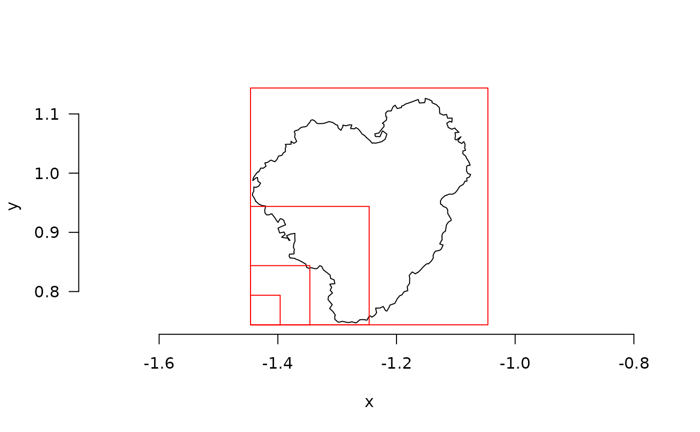

Calculate fractal dimension using the box counting method
Details
This function calculates fractal dimension using the box counting method.
If lvec is not specified, a default based on resolution and extent will be used.
Based on lvec, boxes of different sizes are defined and the function counts boxes that capture the outline of the shape.
It is recommended to specify the maximum value of lvec so that the largest
box encapsulates the entire object. The smallest scale included in lvec
should not be smaller than the resolution of your object.
Examples
mcap_2d <- mesh_to_2d(mcap)
fd_boxes(mcap_2d, plot = TRUE, keep_data = TRUE)
#> $D
#> [1] 1.39879
#>
#> $lvec
#> [1] 0.39015772 0.19507886 0.09753943 0.04876971 0.02438486 0.01219243
#>
#> $data
#> l n
#> 1 0.39015772 1
#> 2 0.19507886 4
#> 3 0.09753943 11
#> 4 0.04876971 28
#> 5 0.02438486 65
#> 6 0.01219243 138
#>
#> $method
#> [1] "boxes"
#>
fd_boxes(mcap_2d, lvec = c(0.05, 0.1, 0.2, 0.4), plot = TRUE)

#> [1] 1.61225